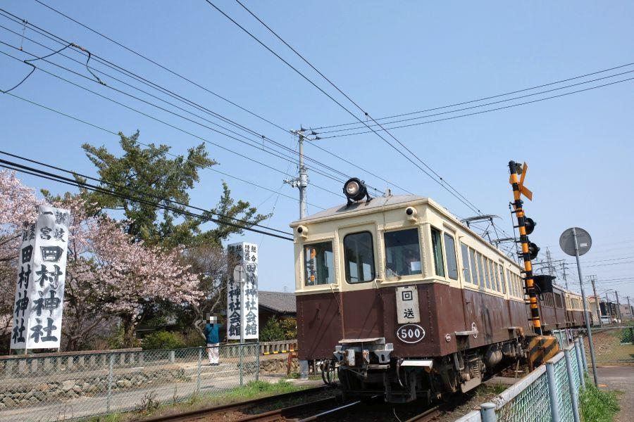
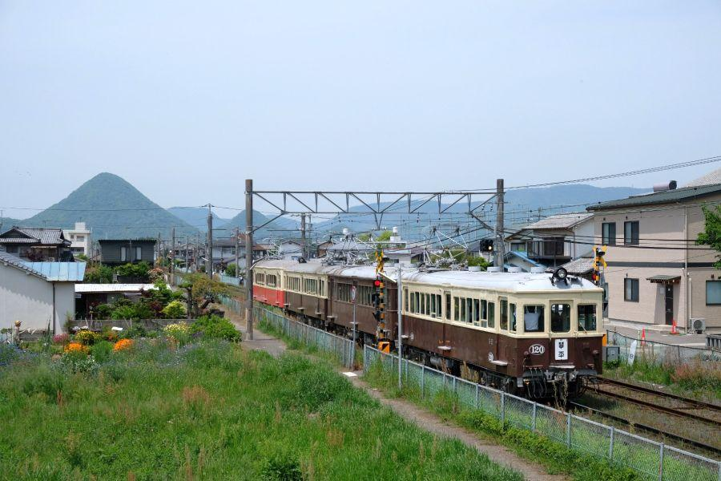
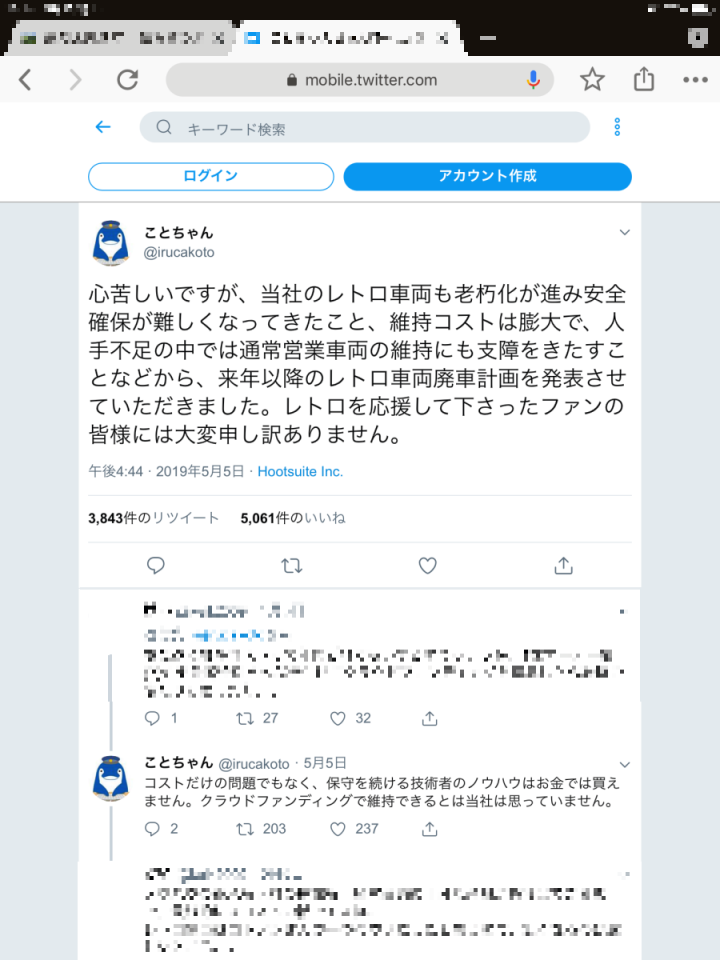
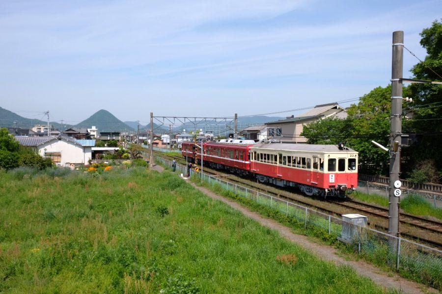
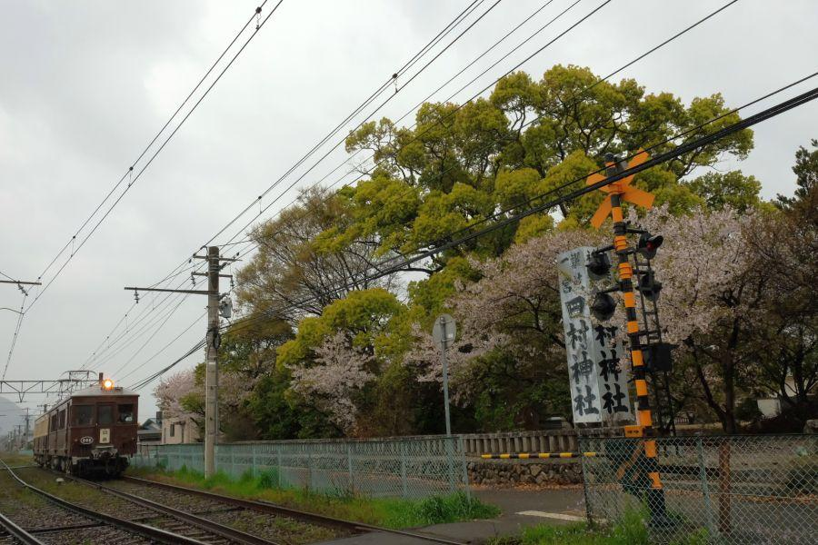
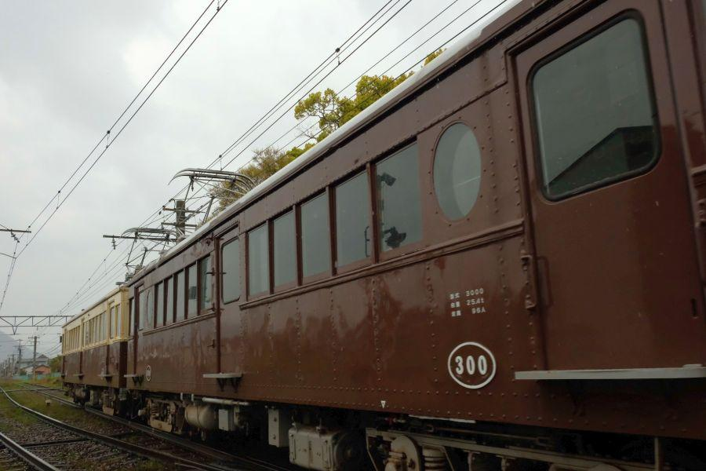
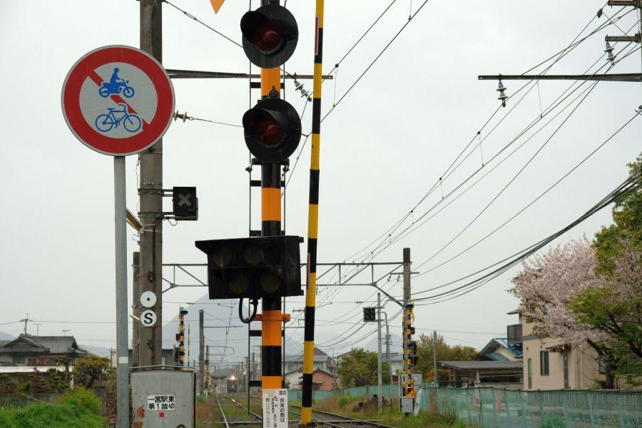

ことでんが誇るレトロ電車。順次引退が発表されました < ことでん / 香川県 >

"ことでん"
の愛称で、香川県民・県外の観光客さん・鉄道ファンの皆さんから広く親しまれている高松琴平電気鉄道。初代の路線の開業は明治44年(1911)と、歴史は非常に古い。
東讃電気軌道(現 志度線)... 明治44年(1911)
高松電気軌道(現 長尾線)... 明治45年(1912)
琴平電鉄(現 琴平線)... 大正15年(1926)
そんな老舗鉄道会社である「ことでん」ですが、保有している車両の中に 開業時に発注した電車が、動く状態で残されています(＝動態保存)。
ことでん自慢のレトロ電車

>>手前から
1000形120号 大正15年製造
3000形300号 大正15年製造
5000形500号 昭和3年製造
20形23号 大正14年製造
120号・300号は、琴平電鉄(現 琴平線)の初代路線開通(栗林公園－滝宮)に合わせて自社発注した車両。500号は 昭和2年(1927)の琴平線全通後に自社発注した車両。
現役で走っている車両は 全て他社から譲渡されたものなので、自社で一貫して保有している車両は この三両ということになる。
四両あるレトロ電車の中で最も古いのが 23号。元々は大阪鉄道(現 近鉄南大阪線)が発注した車両で、琴電には 昭和36年(1961)に譲受され、翌年から運行が開始された。なお南大阪線と琴平線では線路の幅(＝軌間)が異なるため、信貴生駒鉄道(現 近鉄生駒線)で使用されていた車両の台車を転用の上、導入されている。
近鉄の車両が他社へ譲渡された例は少なく、現役車両では 他に静岡県の大井川鉄道で見られるだけとなっています。
来年以降、レトロ電車が廃止の報...

経済産業省「近代化産業遺産」にも認定されているレトロ電車三両(四両のうち23号を除く)でしたが、
このたび 二年かけて四両全ての車両が順次廃車になることが発表されました。
23号 → 令和二年(2020) ゴールデンウィーク
500号 → 令和二年(2020) シルバーウィーク
300号・120号 → 令和三年(2021) ゴールデンウィーク
近鉄由来の最古の電車

四両の中で最も古く近鉄由来の23号が、引退の先陣を切ります。来年のゴールデンウィークのイベントの後に廃車されることが発表されたので、この車両に関しては 残された時間が一年。現在 公表されている運転予定は、
6/16(日) 120号 － 23号
7/14(日) 500号 － 23号
9/15(日) 300号 － 23号
11/24(日) 120号 － 23号
2/23(日) 23号 － 300号
これに、4月が運転あるかどうか。5月ゴールデンウィークの運行がラストとなります。
(※ その他、貸切や試運転で走ることがあります)
ザ・レトロはこの電車

個人的にお気に入りなのは「3000形300号」
自分の地元で子どもの頃に見ることが出来た 能勢電鉄の旧型車両を思い出させる形状・車体色に、親近感を覚えます。
それもそのはず。
「のせでん」の親会社は天下の阪急電鉄(元々は別会社)。阪急本線を退いた車両で歴代運用されていますが、ことでんは香川県の有力者たちが 国鉄に劣らない高規格路線を目指して、阪急電鉄を視察の上 敷設した、人呼んで「讃岐の阪急」
軌間が阪急と同じ線路幅(＝標準軌)であり、
本線が三つに分かれる十三駅を模しての瓦町駅があったり、
塩江温泉に「讃岐の宝塚」と呼ばれた塩江温泉少女歌劇を運営していたこともありました。
いずれも相当 阪急電鉄の経営を意識した内容なので、車両を発注する際も 私鉄界の最先端を行く阪急電車のデザインを模していても、不思議ではありません。

そのモダンさは、300号の前後左右に配置された丸窓に見ることができます。四両あるレトロ電車のうち、丸い窓を持つ車両は300号だけ。
*「レトロ電車の何がレトロなんですか？」
と聞かれたら、自分ならこの丸窓の事を回答します！
讃岐路を走る大正昭和モダン

離れていてもその存在感は抜群。
大正 → 昭和 → 平成 → 令和
と、四つの時代を駆け抜けたレトロ電車たち。残された運行期間の中で、その雄姿が一人でも多くの人々の記憶に刻まれますように。引退間際の運転では 乗車・写真スポット共に 大混雑になるでしょうから、できるだけ早いうちの訪問をお勧めします。
運行スケジュール
高松琴平電気鉄道(ことでん) レトロ電車特別運行2019